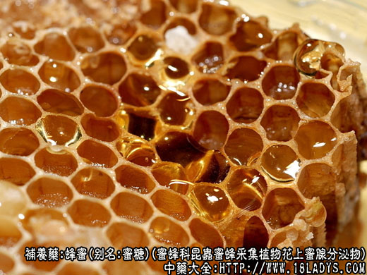

蜂蜜为常用中药。始载《神农本草经》，原名“石蜜”。
别名：蜂糖、蜜糖。
来源：为膜翅目蜜蜂科昆虫蜜蜂采集植物花上蜜腺分泌物，在蜂窝或巢础中酿成的醣类物质。割取后滤去蜂蜡及杂质即成。蜜蜂多为人工饲养，南方山区有少数野生。
产地：全国各地均有生产，但由于蜜源植物分布不同，各地有各地的生产品种。如东北多产椴树蜜，华北主产荆条蜜，枣花蜜。中南、西南、华东等地区多产油菜花蜜，紫云英蜜，枇杷花蜜，柑桔花蜜等。
性状鉴别：新收割的蜂蜜呈粘稠性透明或半透明的液体。色泽不一，有白色，黄色至深琥珀色，微有油样光泽。当气温在20℃以上时，一般保持液态。当气温下降至15℃以下时逐渐生成结晶（习称起砂），或全部结晶成为凝脂样。气香臭不一，各随蜜源植物的花果气味，味甜。易溶于水。
以白色或黄白色，粘性大，水分小，气味香甜，不酸者为佳。
炮制：生用或加热精炼后使用。
性味：甘、平。
归经：入肺、胃、脾、大肠经。
功能：补中益气，润燥滑肠，止咳，解毒。
主治：脾虚胃弱，肠燥便秘，咳嗽，慢性气管炎等症。并能解乌头毒。
注：1、主场成分。一般蜂蜜含葡萄糖和果糖（转化糖）70%～80%，两者的含量约相等。焦糖1%～3%，水分14%～23%。此外尚含有少量挥发油，蜡质、有机酸，矿物质，花粉粒，芳香性物质以及多种维生素等。由于蜂蜜含大量转化糖，服食后，容易被胃肠吸收，所以营养价值优于蔗糖。
2、本品有矫味，防腐作用，为中药制造蜜丸的主要原料。
3、蜂蜜的蜜源植物品种众多，数以百计。其主要植物也有数十种，因而蜂蜜的品质差别较大。各地划分好次等级的方法也不相同。有的按花种分等；有的按上市季节（春蜜、冬蜜）；有的按颜色分等；有的按浓度（含水量的多少）分等；有的按统货处理不分等级。为了贯彻按质论价的原则，从而发展生产，提高蜂蜜质量。1964年供销合作总社对蜂蜜等级划分，作了统一规定。按不同的花种分为三等。按浓度（含水量）的差别，每等分为九级。1965年又作了补充说明：“现行规格原则上不变......”个别划分不适当的省（区）可根据当地蜂蜜质量的好坏自行调整”，具体质量要求概述如下：
1、按花种分等：龙眼、荔枝、枇杷、荆条、椴树、洋槐、枣花等花种蜂蜜及相等于以上的花种蜜为一等蜜。棉花、瓜花、芝麻、芝麻、葵花、油菜、紫云英等花种蜜及相等以上的花种蜜为二等。莽麦、乌桕、皂角、水莲、大葱等花种及相等于以上的花种蜜为三等。
2、按浓度分级：通常意波美氏比重计浓度45度为一级；44度为二级；以下每低一度一下降一级；37度为九级；36度及36度以下为等外级（浓度40度的含水分23%）。
3、鉴定花种方法：主要靠实践经验鉴别，每一花种的蜂蜜，都具特有的色泽和气味以及花粉粒。首先看颜色是白是黄是深是浅，然后再看其结晶粒是粗是细，再用鼻闻，口尝辨别它的香气味道属于哪种蜜源植物，颜色，结晶，气味是否一致，最后根据实践红掌握的各种花种特征，确定它是什么花种。或与标准样品对照，经看、闻、尝、比较等方法就能得出比较正确的结论。此外还可用显微镜观察花粉粒的形状，鉴别蜜源种类。但必须具备识别多种蜜源花粉粒形态的知识，才能认出它是什么花种。总之，要靠反复实践，逐渐积累经验，才能作到准确无误。
4、今将常见的花种蜂蜜，种的特征，品质、产地介绍如下：
对掺假的鉴别，一般的掺假，多兑入饴糖或蔗糖以及淀粉、面粉等。鉴别如下：
1、如掺饴糖，则蜜甜变淡，并带酸味，葡萄糖结晶不显著。滴在纸上能渗透至背面。另外，可取蜜样一份，放入试管内，加净水4份，使之稀释，然后逐渐加入酒精（95%）如有饴糖掺入，则呈现出许多白色絮状物，否则略呈混浊状，没有白色絮状物。
2、如掺入大量蔗糖，则蜜为到哦淡薄，葡萄糖结晶不显著，可用费氏反应法检验。
3、如掺入淀粉及面粉，则蜜显混浊，可取蜜样一份，加适量清水煮沸后放冷，加碘酒或磺酒少许，如显兰色，绿色或红色，就证明有淀粉或面粉掺入。如蜜已全部结晶，可用烧红的光滑铁棍插入蜜中，稍停片刻抽出，如铁棍上有附着物，说明有淀粉等掺杂。
费氏反应法：
试剂：新鲜配制的间苯二酚盐溶液（1%）及乙醚。
操作程序：取5克蜂蜜，放于底部外径约7厘米的乳钵中，加入3毫升乙醚，用钵锤研磨至乙醚完全挥发（约1.5分钟）。然后每次加入3毫升乙醚。每次研磨1分钟，继续多次（约60次）然后使剩余乙醚约1毫升。同蜂蜜一起，倾入直径约7厘米的蒸发皿中。如此共进行3次，将三次收集在蒸发皿中的乙醚淬取液，在室温条件下任其挥发后，冷却。滴加3～4滴间苯二酚盐酸溶液，立即旋荡，使收集物全面润湿，静置1小时后观察。如有樱桃红色，则为正反应（阳性）表示有掺假。如为黄色或淡黄色，则为负反应（阴性）表示是纯蜜。